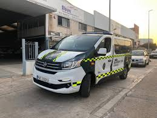
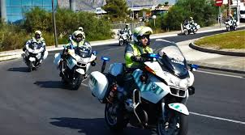

Se dedican a asegurar la condución en toda la peninsula española
Este es un coche de la nueva flota que ha salido este año y que se empiezan a ver en los controles de verano o invierno.
Estas furgonetas se dedican a ir al lugar del accidente para realizar las pruebas pertienentes y averiguar que ha causado el accidente
Hacen paradas de trafico y en algun caso persigue a algun conductor que se haya dado a la fuga